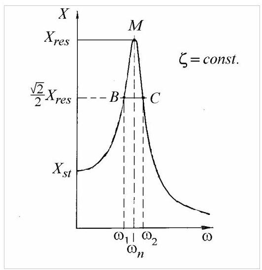
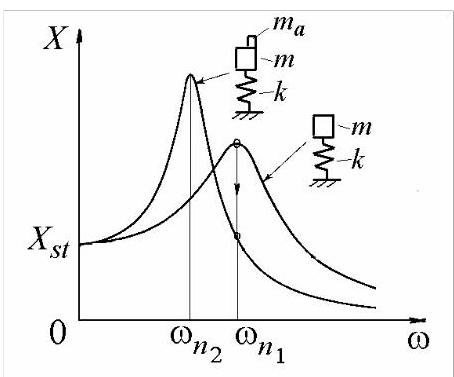

2.4.4 半功率点法
弹簧-质量-阻尼器系统的共振曲线可用于确定阻尼比(图2.32)。
当\(\omega = {\omega }_{n}\)时，共振幅值为\({X}_{\text{res }} = \frac{{X}_{st}}{2\zeta }\)。对于小阻尼，峰值\(M\)与相位共振点重合。纵坐标为\(\left( {\sqrt{2}/2}\right) {X}_{\text{res }}\)的点\(B\)和\(C\)称为半功率点。幅值平方为\(\left( {1/2}\right) {X}_{\text{res }}^{2}\)，因此在对应频率\({\omega }_{1}\)和\({\omega }_{2}\)处由阻尼耗散的功率为共振时耗散功率的一半。

图2.32
代入式(2.56)得
从而得到方程
求解后得到半功率点频率
对于\(\zeta < < 1\)可近似为
记\({\omega }_{1}^{2} \cong {\omega }_{n}^{2}\left( {1 - {2\zeta }}\right)\)和\({\omega }_{2}^{2} \cong {\omega }_{n}^{2}\left( {1 + {2\zeta }}\right)\)，得
或
因此阻尼比(damping ratio)为
其中\({\Delta \omega } = {\omega }_{2} - {\omega }_{1}\)为共振曲线(resonance curve)的带宽。
仅凭共振曲线的形状很难判断阻尼是否真正属于粘性阻尼(viscous damping)。若仅考虑单自由度系统，且运动为简谐运动，最方便的做法是采用“等效粘性阻尼(equivalent viscous damping)”概念:使粘性阻尼系数取某一值，使得在特定幅值和频率的简谐位移循环中，系统耗散的能量与实际阻尼机制在同一位移循环中耗散的能量相等。在式(2.43)中，系数\(c\)即为等效粘性阻尼系数。
2.4.5 附加质量法(Added Mass Method)
在孤立共振(isolated resonance)附近，一般振动系统的行为类似于单自由度系统(single-degree-of-freedom system)的响应。替代系统的等效质量(equivalent mass)和等效刚度(equivalent stiffness)可通过附加质量法(additional mass method)确定。

图2.33
实验绘制了两条频率响应曲线，一条对应实际系统，另一条对应附加已知质量\({m}_{a}\)的系统(图2.33)。固有频率\({\omega }_{n1}\)和\({\omega }_{n2}\)由峰值位移幅值确定。
由相应方程(2.4)可得
可以获得等效质量
于是，由方程(2.70)可知，等效刚度\(k\)。
注意，由于实际系统的原因，附加质量后系统的共振响应更大
以及带有附加质量的系统
如果系统的工作频率接近\({\omega }_{n1}\)，则可通过增加质量\({m}_{a}\)来降低振动系统的受迫响应。
2.4.6 复代数解法(Complex Algebra)
对于简谐激励，作用于图2.26所示系统质量上的力可表示为
从而使稳态解(2.54)变为
其中
为复位移幅值。
在式(2.75)中，\(X\)为模量，\(\theta\)为相位角，\({X}_{R}\)为实部(同相)分量，\({X}_{I}\)为虚部(正交)分量
对于结构阻尼，运动方程(2.63)变为
将(2.74)代入(2.78)得
复幅值\(\bar{X}\)确定为
其中\({\omega }_{n} = \sqrt{k/m}, g = h/k\)，因此
在\({X}_{R}\)与\({X}_{I}\)的表达式之间消去\(\omega\)得
该圆为复平面上响应矢量端点的轨迹。
Matlab Demo
附加质量对振动系统的核心影响是降低其固有频率。这一规律在系统的频响函数（FRF）上表现得尤为直观：随着质量的增加，FRF的共振峰会明确地向低频区域移动。若系统的物理阻尼系数保持不变，附加质量还会导致阻尼比下降，使共振峰变得更高更尖锐。
这种物理现象与振动测试中传感器质量对被测系统的影响存在直接的对应关系。传感器本身具有质量，当它被安装到被测结构上时，就相当于一个“附加质量”，会不可避免地改变结构原有的动态特性。如果传感器质量相对于结构的等效质量过大，将会导致测得的固有频率偏低，从而引入显著的测量误差。因此，在动态测试中，选择轻量化的传感器是保证测量精度的关键。
%% 1. 初始化和定义系统参数
clear; % 清除工作区变量
clc; % 清除命令窗口
close all; % 关闭所有图形窗口
% --- 定义原始系统物理属性 ---
m = 10.0; % 系统的等效质量 (kg)
k = 40000; % 系统的等效刚度 (N/m)
c = 50; % 系统的等效粘性阻尼系数 (N-s/m)
F0 = 20; % 简谐激励力幅值 (N)
% --- 定义附加质量 ---
% 这可以代表一个传感器的质量
m_a = 5.0; % 附加质量 (kg)
%% 2. 计算两种情况下的系统特性
% --- 情况 1: 原始系统 ---
m1 = m;
omega_n1 = sqrt(k / m1); % 原始系统的固有频率 (rad/s), 对应式 (2.70)
zeta1 = c / (2 * sqrt(k * m1)); % 原始系统的阻尼比
% --- 情况 2: 带有附加质量的系统 ---
m2 = m + m_a;
omega_n2 = sqrt(k / m2); % 附加质量后的新固有频率 (rad/s), 对应式 (2.71)
zeta2 = c / (2 * sqrt(k * m2)); % 附加质量后的新阻尼比
% 在命令窗口显示计算出的固有频率
fprintf('原始系统的固有频率 ω_n1: %.2f rad/s (%.2f Hz)\n', omega_n1, omega_n1/(2*pi));
fprintf('附加质量后的固有频率 ω_n2: %.2f rad/s (%.2f Hz)\n', omega_n2, omega_n2/(2*pi));
%% 3. 生成频响函数 (FRF)
% 稳态响应的幅值X是激励频率ω的函数，其表达式为：
% X(ω) = (F0/k) / sqrt( (1 - (ω/ω_n)^2)^2 + (2*ζ*ω/ω_n)^2 )
% 定义用于绘图的激励频率范围
omega_range = linspace(0, 100, 1500); % 频率向量 (rad/s)
% 计算静态位移
X_st = F0 / k;
% 计算频率比
r1 = omega_range / omega_n1;
r2 = omega_range / omega_n2;
% 计算两种情况下的响应幅值
X1 = X_st ./ sqrt((1 - r1.^2).^2 + (2 * zeta1 * r1).^2);
X2 = X_st ./ sqrt((1 - r2.^2).^2 + (2 * zeta2 * r2).^2);
%% 4. 绘图与可视化
% 创建图形窗口并绘制两条频响曲线，类似于文档中的图2.33
figure('Name', '附加质量法对频响函数的影响');
hold on;
% 绘制原始系统的FRF
plot(omega_range, X1, 'b-', 'LineWidth', 2, 'DisplayName', '原始系统 (m)');
% 绘制附加质量后的系统FRF
plot(omega_range, X2, 'r--', 'LineWidth', 2, 'DisplayName', ['系统 + 附加质量 (m+m_a = ' num2str(m2) ' kg)']);
% 标记共振峰对应的固有频率
line([omega_n1, omega_n1], [0, max(X1)], 'Color', 'blue', 'LineStyle', ':', 'DisplayName', sprintf('ω_{n1} = %.2f rad/s', omega_n1));
line([omega_n2, omega_n2], [0, max(X2)], 'Color', 'red', 'LineStyle', ':', 'DisplayName', sprintf('ω_{n2} = %.2f rad/s', omega_n2));
% --- 美化图形 ---
title('附加质量对系统频响函数的影响', 'FontSize', 14);
xlabel('激励频率 ω (rad/s)', 'FontSize', 12);
ylabel('响应幅值 X (m)', 'FontSize', 12);
legend('show', 'Location', 'northeast');
grid on;
box on;
hold off;
%% 5. 理论验证
% 根据文档中的式(2.72)，利用两条曲线的峰值频率反算系统的原始质量
% m = m_a / ( (ω_n1^2 / ω_n2^2) - 1 )
m_calculated = m_a / ( (omega_n1^2 / omega_n2^2) - 1 );
fprintf('\n--- 理论验证 ---\n');
fprintf('仿真中使用的原始质量: %.2f kg\n', m);
fprintf('根据峰值频率反算的质量 (式2.72): %.2f kg\n', m_calculated);